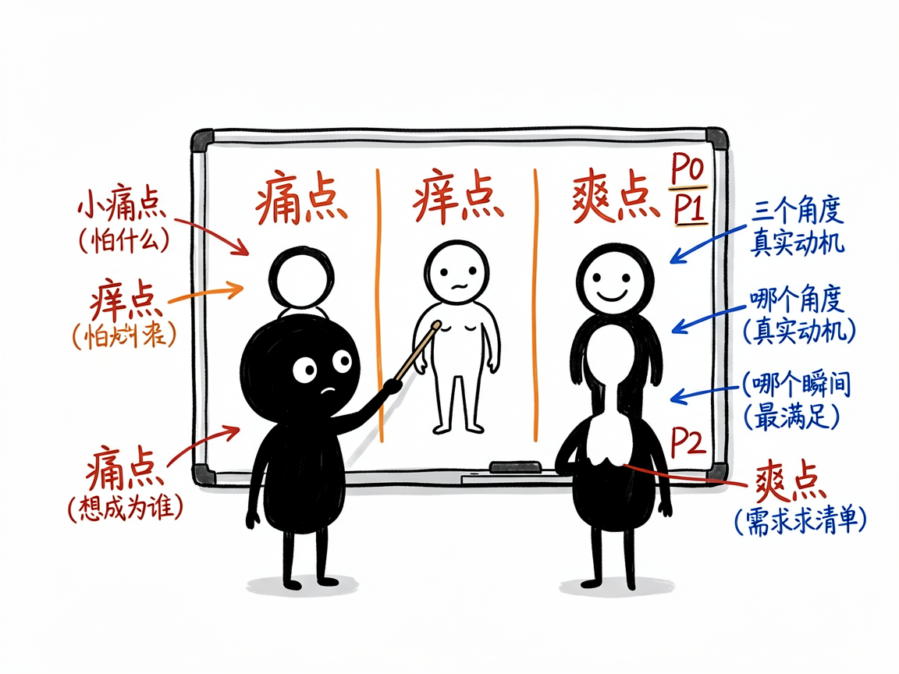

搞不清用户到底要啥？让它十分钟帮你把人看透 —— market-insight 介绍
很多人做产品或写文案时，最卡的一步不是"不会做"，而是"不知道用户在想啥"。你以为大家图便宜，其实人家要的是面子；你以为功能越多越好，其实用户只想要一个"啊哈"的爽点。传统做法要么花几万找咨询公司，要么约十几个人深访，又慢又贵。
market-insight 就是来解决这件事的。
你给它一个产品方向和一点背景，它还你一套能直接拿去写文案、做设计的用户洞察，十分钟就能有方向感。
它到底能做什么
- 画用户画像：避开"男女老少通吃"的陷阱，给你 4 类具象的用户（比如"乡愁味蕾固执派"），并标出谁最值得先抓。
- 拆情绪动因：从"痛点（怕什么）、痒点（想成为谁）、爽点（哪个瞬间最满足）"三个角度，挖出能直接写进广告的真实动机。
- 列产品机会：把情绪洞察转成按优先级排好的需求清单（P0 核心 / P1 重要 / P2 锦上添花），告诉你明天就能先干哪三件。
- 生成创业路线图（可选）：基于《小而美》方法论，把机会变成一人公司/小团队能落地的 6 步计划——社区定位、极简 MVP、前 100 个客户冷启动等。
- 按需选深度：你可以只要用户画像，只要情绪洞察，只要产品机会，或走完整四阶段。
一个具体例子
在对话里直接说：
我想做个胡辣汤外卖，帮我做完整用户洞察
它会先问你产品处于概念/开发/上市哪个阶段，然后一步步产出画像、情绪点、P0 机会，甚至一份 90 天创业手册。你拿到的不是空话，而是"85℃热汤逼出一身汗"这种有画面感的表达，能直接当文案用。

谁适合用
- 创业者和一人公司、自由职业者：想清楚"卖给谁、凭啥买"。
- 产品经理：找差异化和功能优先级。
- 市场/文案同学：挖情绪点，写出让人共鸣的内容。
- 想做副业、把技能变现的人：用"小而美"路线低成本启动。
一点说明 / 小提示
这是一个"思考框架型"技能，靠 AI 和你对话推演，不联网抓数据、也不依赖外部账号，普通人也能在 AI 助手对话里直接用。它给的是"方向感"不是"标准答案"——传统调研要花几万和一个月，它用十分钟换来的结论，最好再拿真实用户快速测一测。已融资、要快速规模化的公司，和重资产传统行业，不太适合它的"小而美"路线。